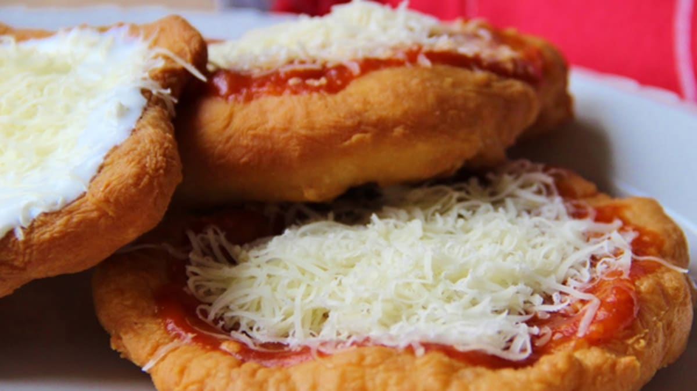

Voňavé, nadýchané a dozlatova smažené langoše potěší každého – ať už je máte raději s česnekem, kečupem nebo sýrem.
Připravíme kvásek z droždí, cukru, trochy mouky a vlažné vody. Necháme vzejít.
Do mísy dáme mouku, sůl, jogurt, olej a kvásek. Vypracujeme těsto. Podle potřeby přidáme vodu nebo mouku. Zakryjeme a necháme kynout.
Vykynuté těsto rozdělíme na bochánky, které rozválíme na placky. Necháme ještě cca 15 minut kynout.
Placky smažíme z obou stran ve vyšší vrstvě rozpáleného oleje dozlatova. Odkládáme na papírový ubrousek.
Podle chuti potřeme česnekem, kečupem a posypeme sýrem. Podáváme teplé.